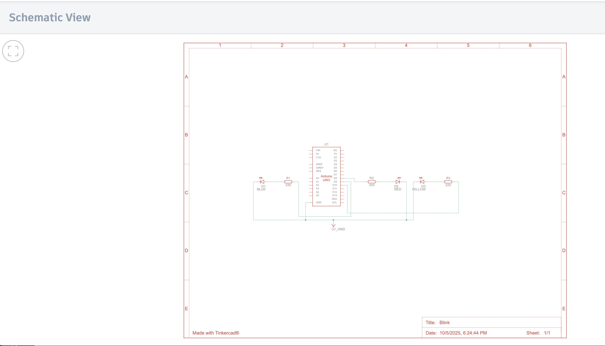
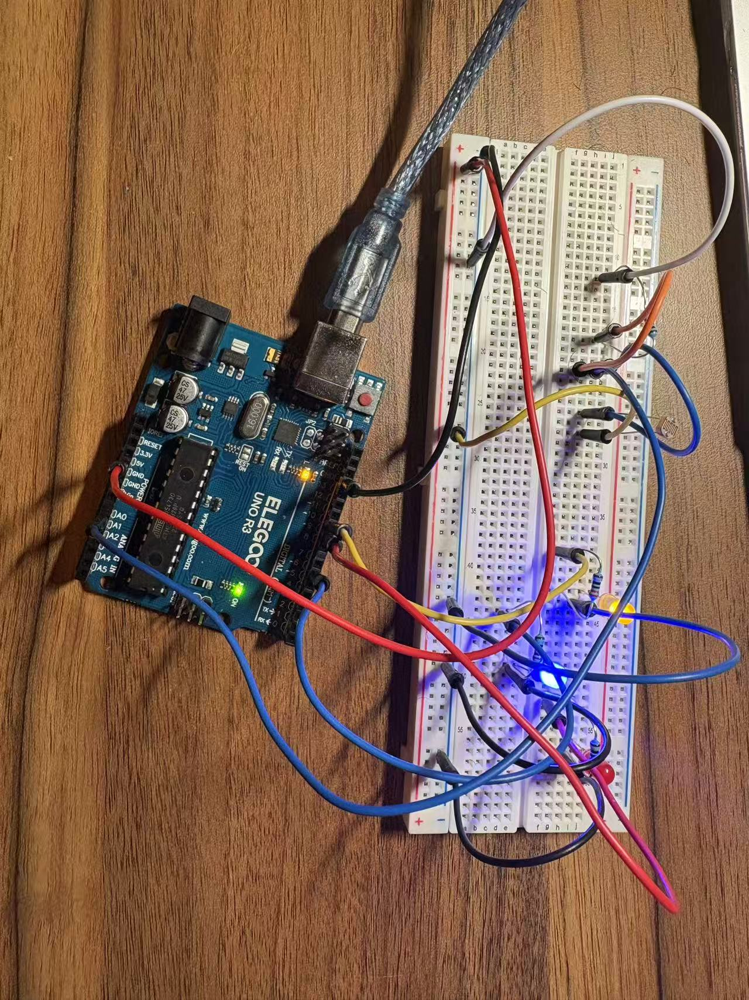

Schematic

schematic!
Circuit

circuit!
Circuit Operation

circuit's operation!
Graph

Please click the picture, there are two more inside.
Use an LDR with a 10kΩ resistor to form a voltage divider; A0 reads the midpoint voltage (brighter → higher voltage).
5V ── LDR ──●── 10 kΩ ── GND
│
A0
The 10 kΩ resistor allows the Arduino to sensitively detect light changes.
The 220 Ω / 100 Ω resistors protect the LEDs and ensure brightness matching.

schematic!

circuit!
circuit's operation!
Please click the picture, there are two more inside.
const int R = 9, Y = 10, B = 6; // three LEDs (PWM)
const int LDR = A0; // A0 reads the voltage divider (midpoint of LDR+10k)
void setup() {
pinMode(R, OUTPUT); pinMode(Y, OUTPUT); pinMode(B, OUTPUT);
Serial.begin(115200);
Serial.println(F("[A3] LDR→RGB demo. Divider: 10k to GND; PWM on D9/D10/D6."));
}
void loop() {
int adc = analogRead(LDR);
int level = map(adc, 0, 1023, 0, 255);
if (adc < 400) {
analogWrite(R, level);
analogWrite(Y, level/2);
analogWrite(B, 0);
} else if (adc > 700) {
analogWrite(R, 0);
analogWrite(Y, level/2);
analogWrite(B, level);
} else {
analogWrite(R, level/2);
analogWrite(Y, level);
analogWrite(B, level/2);
}
Serial.print("ADC="); Serial.print(adc);
Serial.print(" PWM="); Serial.println(level);
delay(30);
}
See the figure above (one trace per LED: Red, Blue, Yellow).
On an Arduino UNO you can control about 18 LEDs independently (avoid D0/D1 used by Serial). At ~8–10 mA per LED that’s roughly 144–180 mA total. Stay below ATmega328P limits (≈20 mA per pin, ≲200 mA total); ≤150 mA is safe.
Human flicker-fusion threshold ≈ 50–60 Hz (period ≈ 20–16.7 ms). For a steady look, use ≥100 Hz (≤10 ms period).
Yes. I used AI to learn HTML embedding for code and checked current limits. I tested both simulation and physical circuit.